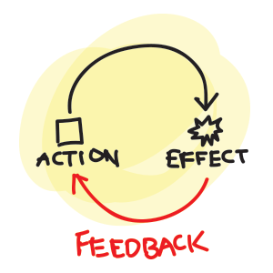

Pairing and Giving Feedback

At DevBootcamp giving and receiving Feedback is an essential way of life. We are required to give feedback for every paired programming session that we partake in.
Let me just say that Feedback freaks me out a little bit. I seem to have a great deal of aversion towards both giving and receiving feedback. Everyone I have worked with has been great so far. They have all been both technically capable and extremely empathetic.
Often times I don't really know what to say because I feel as if my words fail me. Here we are creating meaningful connections with people. How do you encapsulate that experience with mere words?
On the receiving end of feedback I also have a hard time dealing with. Both in accepting the positive and the negative. Based on the feedback I received so far I can guess that people generally enjoy pairing with me. I could also maybe slow down a little bit and let other people control the session more. I will definitely bring that feedback into my awareness in my next session.
To conclude, I would like to say that I think that exploring my discomfort zone while utilizing Feedback will ultimately lead to a greater emotional intelligence for myself. I am grateful for that opportunity, especially around such great people here at DevBootcamp.
- Brendan R. Miranda